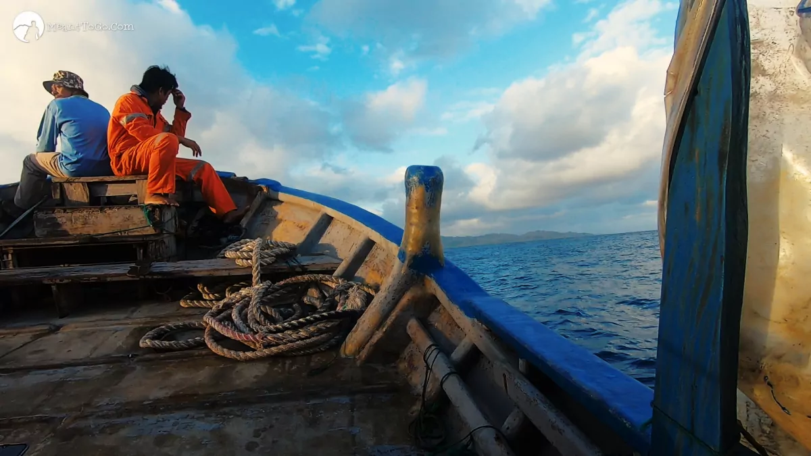
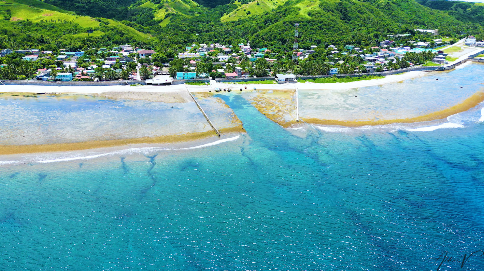

Honesty Coffee Shop
Honesty coffee shop operates without any employees present. A unique business model based on honesty, relying solely on the integrity of customers to pay for the items they take.

Faluwa Boat Ride
Set sail in a traditional faluwa boat for a serene voyage across Philippines' azure sea. Experience the ideal combination of adventure against the backdrop of sun-kissed skies.

Mesmerizing beauty of Nature
Explore Batanes' coastal beauties, featuring untouched beaches, towering cliffs, and blue oceans. Nature's A masterpiece awaits, inviting you to a calm maritime getaway.